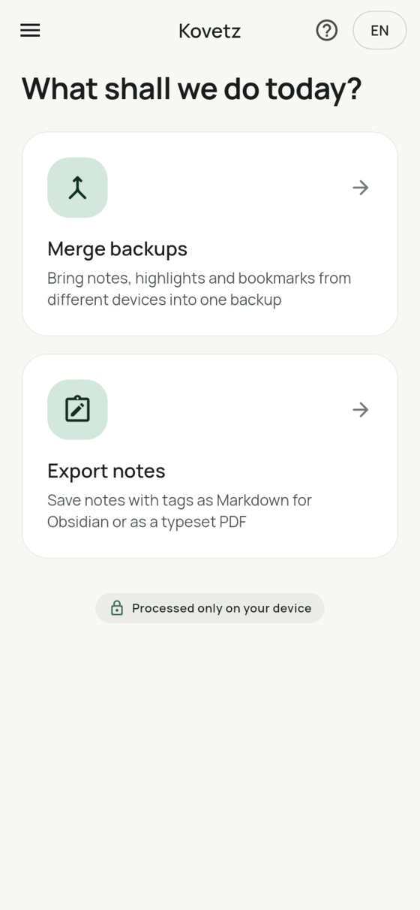
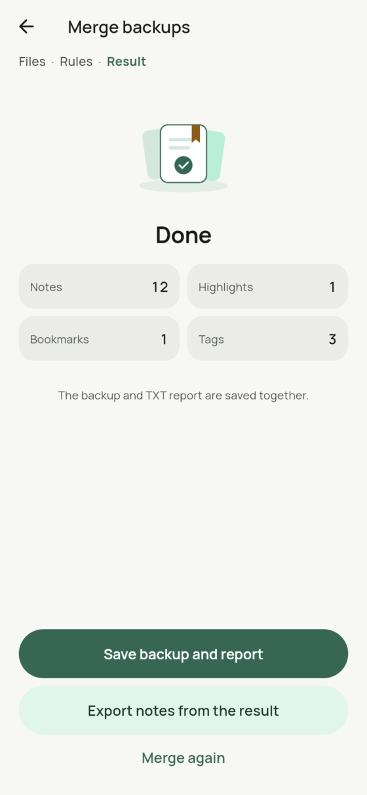
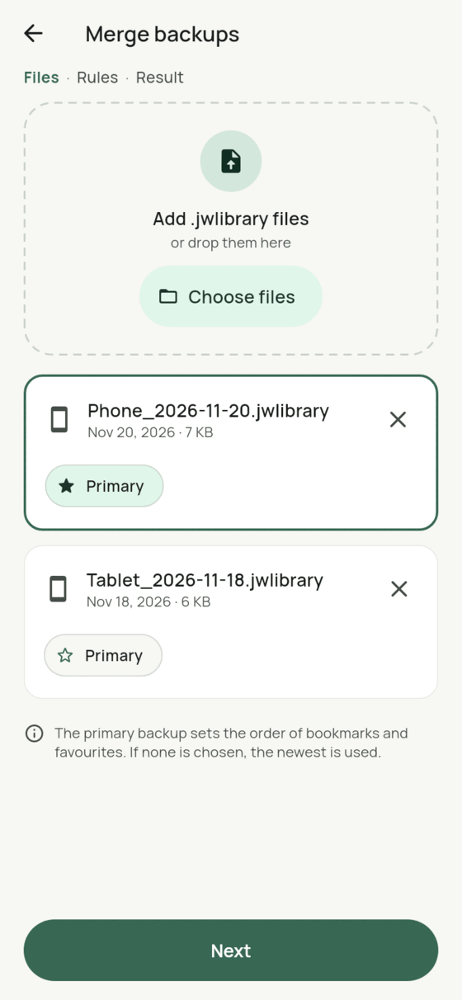
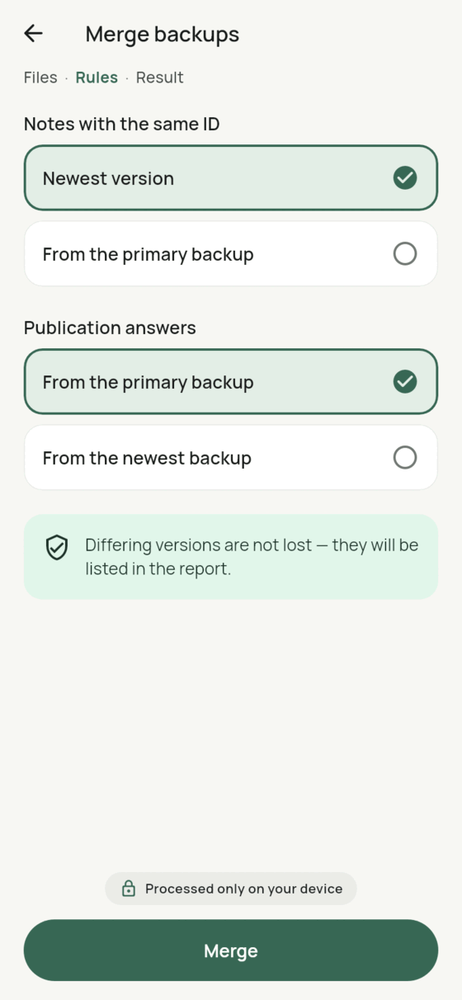
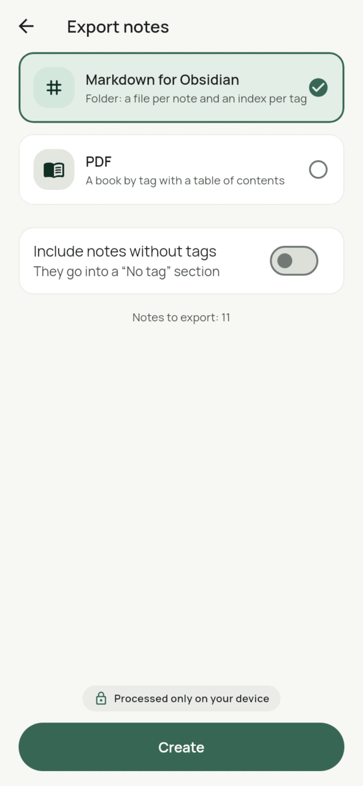
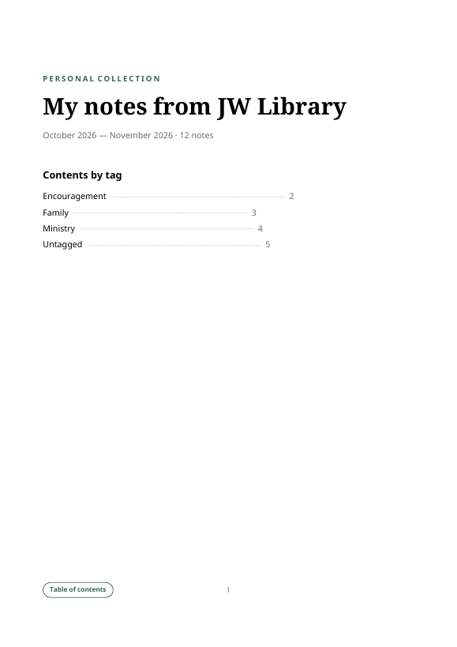
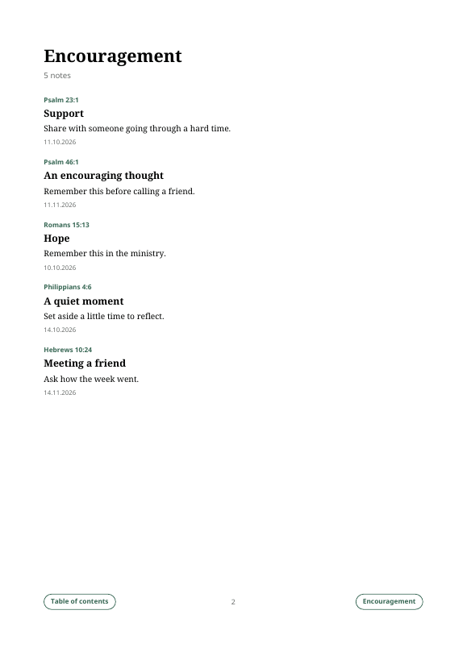

Keep your original backups
Kovetz saves the result as a separate file and reports anything it could not transfer. Even backups from 2019 are supported.
Your phone, tablet, and computer each hold different study notes. Kovetz brings them into one backup you can restore in JW Library.


As you read and study, different notes build up on your phone, tablet, and computer. Restoring a backup in JW Library replaces the notes on that device with the notes from that backup.
Add backups from different devices, even ones made years apart. Kovetz merges notes, highlights, bookmarks, favorites, and answers into a single .jwlibrary file.
Kovetz saves the result as a separate file and reports anything it could not transfer. Even backups from 2019 are supported.
Save notes as a PDF book with a table of contents by tag and page numbers. Read it on screen or print it.
Get one Markdown file per note, index pages by tag, and internal links that are ready to use.
Select “Choose files” and add backups from your phone, tablet, and computer.

Review the merge rules. Kovetz reads your backups and combines them into one file.

Restore the merged file in JW Library, or choose “Export notes” and select PDF or Obsidian.

Find the right page using the table of contents by tag. Within each tag, sort notes by source or date. The PDF supports Cyrillic and Armenian text.


Each note gets its own Markdown file with the source in its properties. Tag pages link to the matching notes, and the main index helps you find your way around.
Your backups and notes are processed on your device. Kovetz connects to GitHub only if you choose to check for updates. You can use the app without an account.
The guide walks you through one step at a time, with large screenshots that show exactly where to click or tap. Read it on the site or print a copy.
Open the user guideOne person builds Kovetz in his spare time. The app is free and ad-free. If it helped you, you can make an optional donation to support development or buy me a coffee.
Restoring in JW Library replaces the data on your device. If older backups still contain your notes, merge them with Kovetz and restore the combined file.
You only need it to download Kovetz and to check for updates if you choose. Merging and exporting work offline.
Kovetz writes the result to a separate file and leaves your original backups untouched. Always make a fresh backup of your device before restoring.
The merged backup keeps the newer version and saves the other version in the report.
Yes, if a deleted note still exists in one of the backups you added to the merge.
Kovetz accepts .jwlibrary files from different devices, including backups made in different years.
Restore the merged .jwlibrary backup to bring notes back into JW Library. PDF and Obsidian exports are for reading and searching.
Kovetz is free. Its source code is available under the MIT license.
Kovetz is an independent program, not affiliated with JW Library or its developers.
“Kovetz” (קוֹבֶץ) is Hebrew for “collection”, “compilation” and also “file”. It comes from a root meaning “to gather”, which is exactly what the app does: it gathers your notes from different devices into one backup.